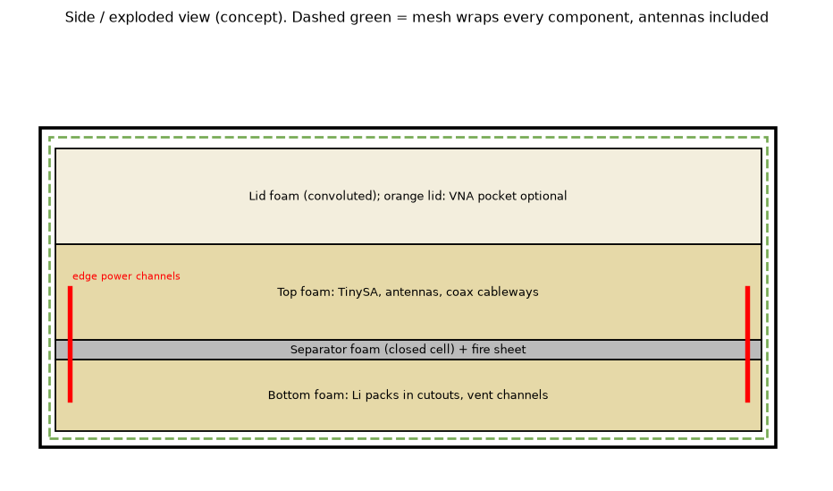
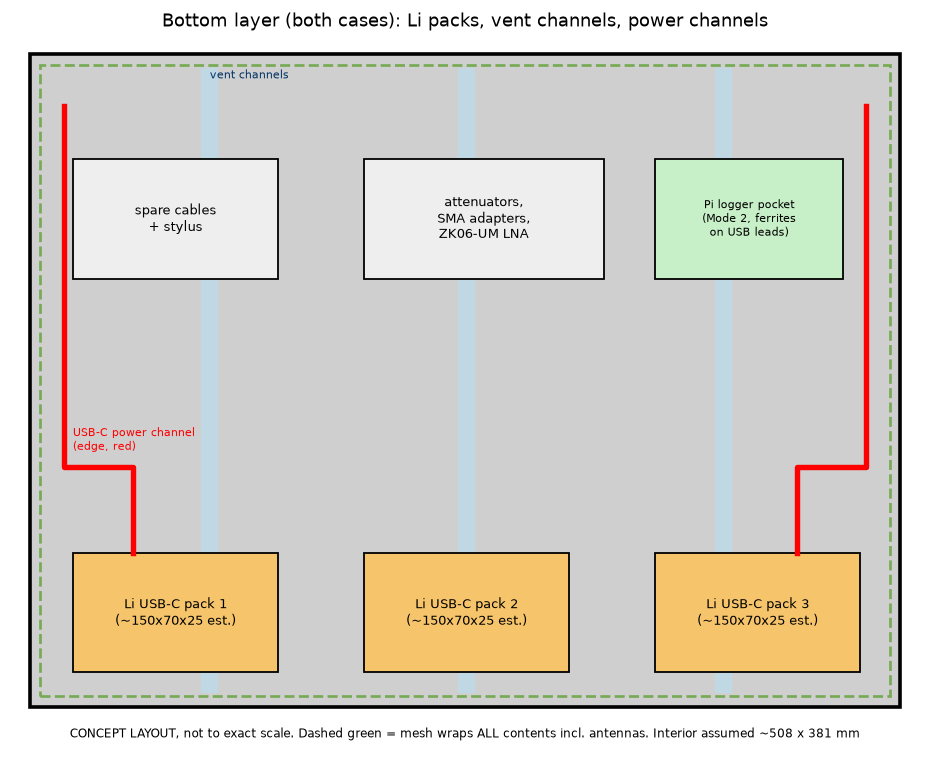
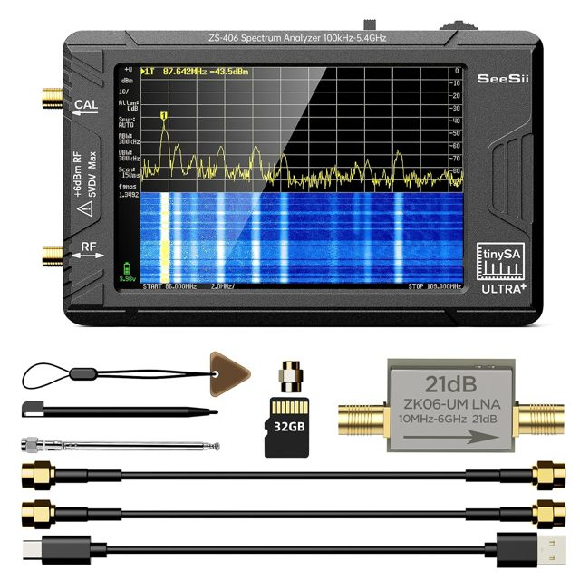
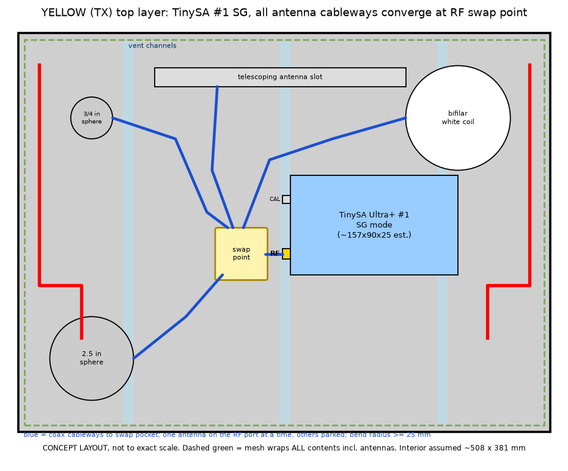
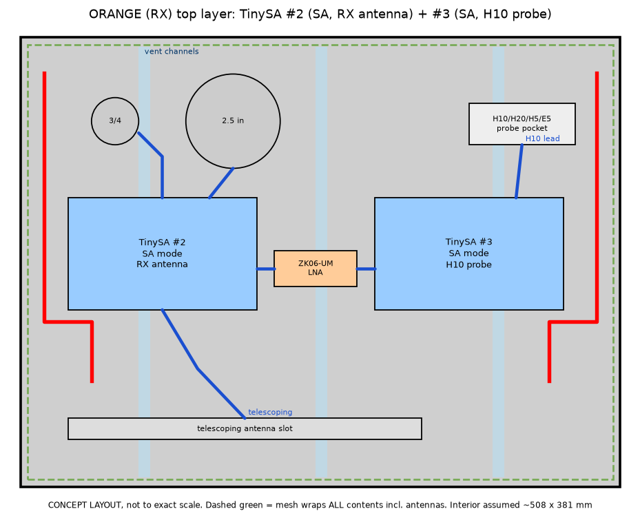

Getting Ready for Field Experiments: NANUK Case Packing
Concept layouts for discussion. Steve and other readers: please comment (links at the bottom). Nothing here is cut yet.
What is real and what is estimated
- Real (hub records): three TinySA Ultra+ ZS406 (internal battery listed at 5000 mAh, about 3 hours), three Zeenko ZK06-UM LNAs, K-Mac 3/4 in (0.750 in) and 2.50 in aluminum spheres, Tekbox TBPS01 probe set (H20, H10, H5, E5), Less EMF RadioScreen mesh (130 threads per inch), NanoRFE VNA6000-A.
- Estimated: the yellow and orange NANUK model numbers and interior sizes are not on the hub yet. Drawings assume about 508 x 381 mm (20 x 15 in) floor and 190 mm depth. TinySA body about 157 x 90 x 25 mm, USB-C power banks about 150 x 70 x 25 mm, bifilar white coil about 130 mm across. Measure before cutting.
Layer scheme (both cases)

- Bottom: lithium USB-C packs in snug cutouts, 25 mm or more of foam between packs, spare cables, adapters, attenuators.
- Separator: closed cell foam plus a fiberglass or silicone fire sheet.
- Top: TinySA(s), antenna pockets, coax cableways.
- Lid: convoluted foam to hold everything down.

Power cables (red) run in channels along the outer edges, up through a notch at each corner of the separator, to the TinySA USB-C port. Coax (blue) stays in the top layer only. Where a coax and power channel must meet, they cross at 90 degrees, never side by side.
The TinySA Ultra+ RF port

Each TinySA has one measurement SMA port, labeled RF (the CAL port above it is the calibration output). Antennas therefore share that one RF port, one at a time across runs.
Antenna swap procedure: every antenna cableway ends at a small swap pocket (coax manifold) next to the TinySA RF port. Connect one antenna lead to the RF port with a short jumper. Cap the parked leads and leave them coiled in the swap pocket. Log which antenna was on RF, then close the mesh. Use a torque wrench or finger tight plus a quarter turn, and do not let the jumper bend at the port.
Yellow case: transmitter (closed during tests)

- TinySA #1 in SG mode centred, with pockets for the 3/4 in sphere, 2.5 in sphere, bifilar white coil and the chrome telescoping antenna (collapsed slot).
- Coax cableways: a 6 mm wide channel cut from each antenna pocket to the swap pocket next to the TinySA RF port, with curves of 25 mm radius or more (RG-405 and RG-316 are fine at that). Each run is labeled at both ends: S34 (3/4 sphere), S250, COIL, TEL.
- Cage by design: the RadioScreen mesh wraps every component in the case, antennas included. The experiment targets SLW and SW (scalar longitudinal and scalar waves, per Hively's published EED framing), which are hypothesized to pass through the cage while the conventional RF TEM field is blocked. The only exception is an Experiment B iteration where the cage is deliberately opened for comparison.
Orange case: receiver/detector (open on the bench table)

- TinySA #2 in SA mode on the receive antennas. As in the yellow case, the 3/4 in sphere, 2.5 in sphere, bifilar coil and telescoping antenna cableways all converge at a swap pocket next to its RF port, one antenna connected at a time. A ZK06-UM LNA can sit in the swap pocket between the jumper and the RF port when needed.
- TinySA #3 in SA mode on the H10 or E5 probe (iterated in the field), with its own short cableway to its own RF port, kept apart from the antenna runs. This uses all three TinySAs.
- Stylus through the mesh: the TinySA Ultra+ has a 4 in resistive touch screen (tinysa.org specification), which responds to pressure, not to skin or conductivity. The included stylus therefore works through the mesh: lay the cloth flat on the screen and press firmly. RadioScreen at 130 threads per inch has openings of roughly 0.1 to 0.15 mm, fine enough to read the display. The jog switch also works through the cloth.
Excess metal note
If the unused spheres or the bifilar coil (excess metal inside the cage) appear to interfere with SLW/SW detection, temporarily remove them from one or both cases as observed. Log the configuration for every run: which antenna is on RF, which probe (H10 or E5), and which parts were left in or taken out.
Data capture
Two equal methods, chosen by run length. In both, nothing crosses the cage during a run.
Mode 1: per run SD saves (short runs)
- A microSD card in each TinySA Ultra+. Everything is done with the stylus through the mesh.
- Storage, then SAVE TRACES (CSV of the trace data) and SAVE CAPTURE (BMP screenshot). Turn on AUTO NAME for date and time file names. On newer firmware, tapping the SD card icon on screen also saves.
- Per run: a Max Hold trace, plus an optional averaging trace, over a fixed duration. Save at the end.
- Afterward: copy files with the TinySA in USB DISK mode, or pull the card into a card reader.
Mode 2: continuous collection (long runs)
- A battery powered logger inside the cage: a Raspberry Pi Zero 2 W, or a Pi 4 or 5, on its own USB power bank. Each TinySA connects to it with a short USB cable.
- A Python script (or QtTinySA) sweeps each TinySA and writes timestamped CSV files to the Pi's card.
- The Pi, its battery and every USB cable stay inside the mesh. A cable out of the cage would compromise it.
- Power budget (estimate): a Pi Zero 2 W draws about 0.6 to 1.5 W, and a Pi 4 or 5 about 3 to 7 W. A 20,000 mAh bank (about 74 Wh, roughly 55 Wh usable) runs a Zero 2 W for 35 hours or more, and a Pi 4 or 5 for about 8 to 15 hours. A connected TinySA may also charge from the Pi's USB port, so add about 2.5 W per TinySA until its battery is full, or budget a bigger bank.
- Logger RF noise: Pis radiate clock and switching noise. Put clip ferrites on each USB lead at both ends, keep the Pi in its own foam pocket away from the antenna cableways, and consider a small metal or foil shield around the Pi. Check the noise floor with the transmitter off and the logger running before each long run, and log it.
- The Pi logger pocket is in the bottom layer of both cases, next to the power channel that rises to the TinySA (see the battery layer drawing).
Run log (both modes)
Record the file names with the configuration: mode, parts in or out, cage open or closed, distance, which antenna is on RF, and H10 or E5 on the probe TinySA. Steve, this section is open for your input, especially on save intervals and file handling in the field.
Packing list additions
- microSD cards: one per TinySA (three), plus spares; USB microSD card reader.
- Raspberry Pi logger (Zero 2 W, or Pi 4 or 5) with its own microSD card.
- Short USB cables (TinySA to Pi), one per TinySA, plus a spare.
- Clip ferrites for the USB leads.
- Extra USB power bank for the logger.
Assembly animation

Heat and lithium safety
- Cut 10 mm vent channels across both foam layers (light blue). The TinySA and packs get warm in sun, so add a white or reflective cover over the closed yellow case outdoors.
- Never charge packs inside a closed case. Charge on the open bench. Run from charged packs only.
- Use packs with built in protection. An inline USB-C fuse or a current meter is a cheap check. Put a stick-on temperature strip next to each pack and stop if it reads above 45 C.
- Keep packs below the separator and away from the TinySAs.
Cage, seams, grounding, labels
- The mesh wraps all contents, foam and antennas included, in both cases. No cable or connector passes through it.
- Note on the noise floor: conventional TEM leakage through the mesh (about 40 to 60 dB at 1296 MHz, with seams mattering more than the cloth) sets the floor the SLW/SW signal must beat. Overlap seams by 50 mm or more, fold them, and tape and bond them with conductive tape.
- Do not tie the cage to earth ground in the field unless that is the experiment. Note "floating" or "grounded" in the log.
- Label every pocket and cable end. Photograph each packed layer before a run.
VNA6000-A: keep it out of the cases
Use it at the bench table for pre-run and post-run S11 checks of each antenna, lid open and lid closed, and for cable checks. Inside a case it adds heat and USB cables and does nothing during a run. If space allows, add an optional padded pocket in the orange lid foam so it travels with the receiver.
Comments welcome
Steve, or anyone: comment on GitHub (opens a prefilled issue) or email a comment. Quote the section heading so we know where it goes.